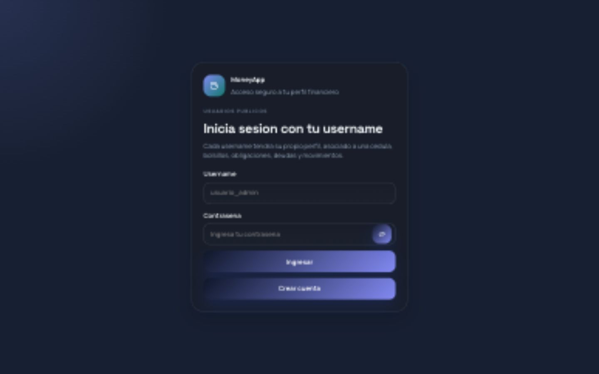
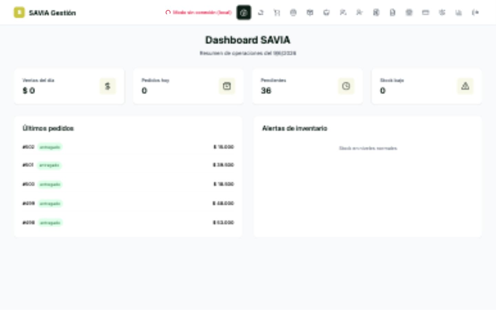
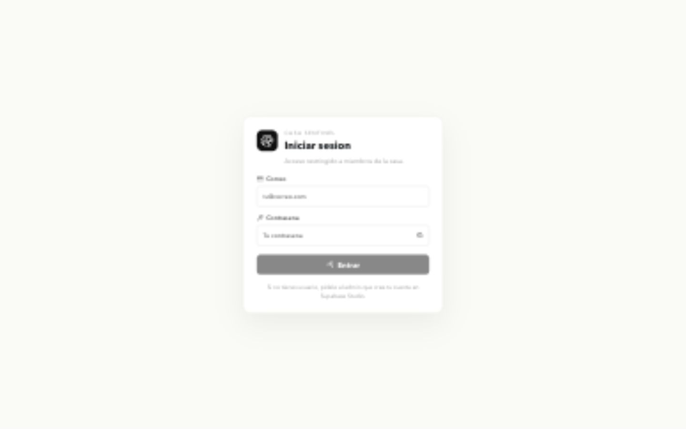
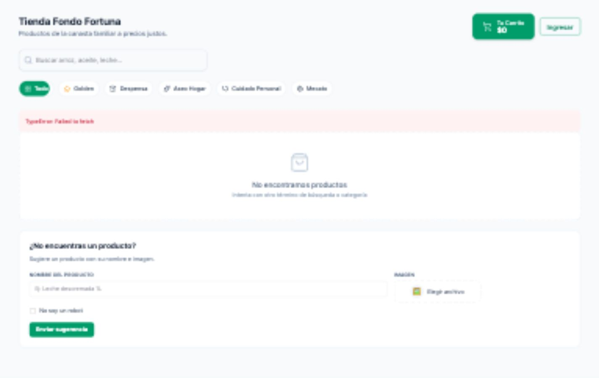
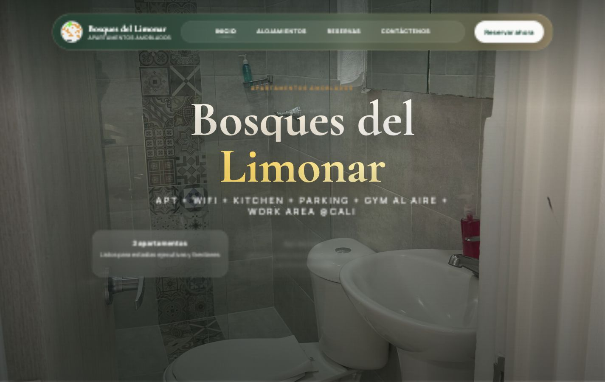
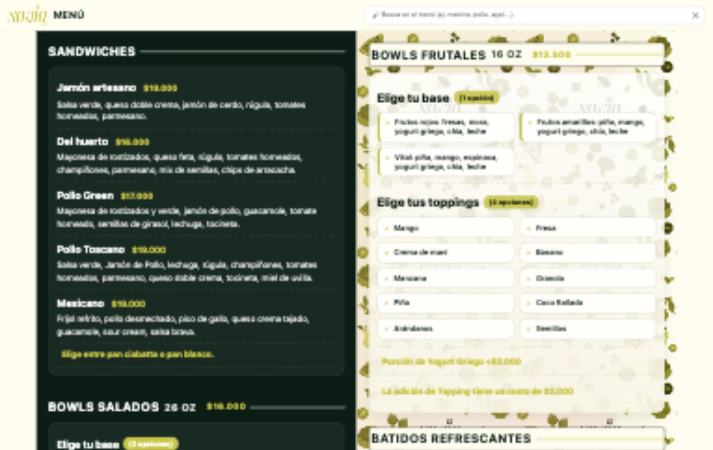
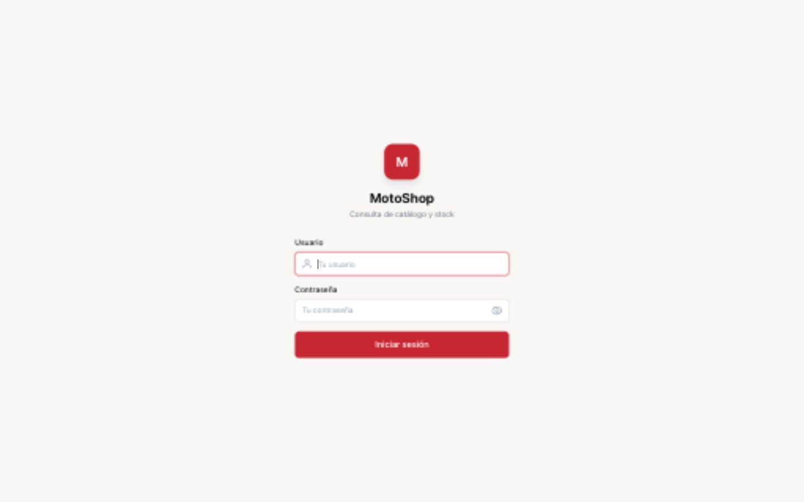
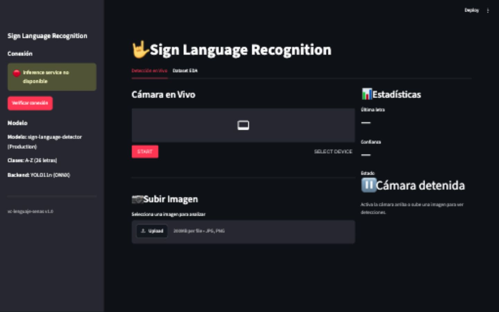
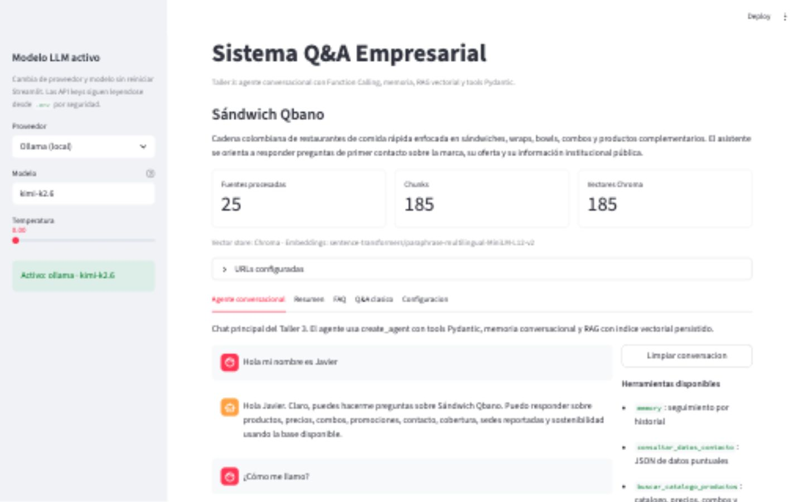

Available for Frontend roles
Javier Portilla
Frontend Developer for data-rich products
React · TypeScript · Tailwind CSS · Dashboards · Realtime UI
I build polished interfaces for analytical tools, POS systems, realtime monitoring, and media-heavy dashboards — with the data-product judgment that comes from 3+ years in analytics and data engineering.


Why this role fits
I build the kind of interfaces this role needs.
Most of my strongest projects are dashboards, admin panels, realtime tools, and data-heavy workflows. I enjoy the part where UI craft meets messy real data: clear states, useful charts, API edge cases, responsive layouts, and screens that help people make decisions without fighting the product.

FinPilot — Personal Finance
React 19 · TypeScript · Recharts · Supabase · PWA
Realtime finance dashboard with charts, KPI cards, categorization, persistent state, and mobile-first behavior.
Savia Inventory — POS
React 18 · TypeScript · Tailwind · Supabase
Restaurant POS and operations platform with complex cart state, split payments, inventory modules, analytics, and AI strategy support.
Casa — Facial Access
React 19 · Supabase · Recharts · Media UI
Realtime dashboard for a Raspberry Pi facial-recognition system with device metrics, camera previews, logs, remote commands, and video playback.
Fondo Fortuna
React 19 · Tailwind · Recharts · Firebase
Cooperative management platform with role-based routing, dashboards, loan/savings flows, mobile cart, and Gemini-powered financial advisor.
Bosques del Limonar
React 18 · TypeScript · GSAP · Framer Motion
Premium landing page with scroll-triggered motion, parallax, responsive visual storytelling, and reduced-motion support.
SAVIA — Digital Menu
React 19 · Tailwind · Vanilla JS · JSON
Fast digital menu with JSON data, live search, responsive layout, print stylesheet, and GitHub Pages deployment.
MotoShop Data Platform
Next.js 14 · FastAPI · DuckDB · Recharts · PWA
Digital transformation platform for a motorcycle parts business: ETL, data products, SKU search, dashboards, forecasting, and AI-assisted operational insights.
Sign Language Recognition
Streamlit · gRPC · Docker · YOLO · ONNX
Microservice-based computer vision system: Streamlit UI sends image/video frames to a gRPC inference service running a YOLO model exported to ONNX.
Local Docker demo
Academic repo

Qbano Conversational Agent
Streamlit · FastAPI · LangChain · LangGraph · RAG
Academic LLM agent for Sandwich Qbano with RAG, memory, prompt experiments, FastAPI endpoints, batch evaluation, and n8n workflow documentation.
Local Streamlit demo
Academic project
Frontend
React
TypeScript
Vite
React Router
Tailwind CSS
Modern CSS
Data UI
Recharts
Dashboards
KPI Cards
Filters
Tables
Realtime Status
State & APIs
Custom Hooks
Context
useReducer
Supabase
Firebase
REST Flows
Interaction
Framer Motion
GSAP
ScrollTrigger
Responsive UI
Reduced Motion
Media UI
Quality
Git
ESLint
GitHub Actions
Vitest setup
RTL setup
Firebase Hosting
Data Background
Python
SQL
Databricks
BigQuery
Power BI
Looker Studio
Languages
Spanish Native
English C1
US Remote Collaboration